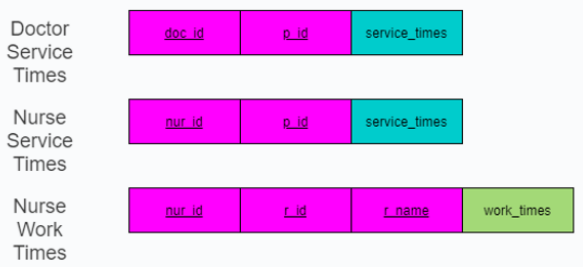

First we have sketch out the ideas of this system: who we gonna make this system for? What this system "will" have? How it's gonna work? It took us times to finally come out with the ideas and we SQL to solve the ideas that we had been thinking in our head:
Pic1: All the components that contains in this system
As you can see in Pic1, there are a lots of things happened around there, so there are some explains for you to understand all of it:
Try to think for a sec, what make a hospital runs smoothly? Doctor and Nurse. For easy to mananage, Each Doctor and Nurse must have there own ID to identical themself.
with Doctor and Nurse, we created their ID with PRIMARY KEY in SQL. Come after that is their name, date of birth, age, salaries and especially with doctors, they will have their major. There are a few things to keep in mind that
Nurse's ID is related to Doctor's ID. Because Doctor can't handle all the works by themself. So, Nurse is the one who support them. Each Nurses must have their Doctor's ID as FOREIGN KEY
to see who they gonna working with.
After setting up all the employees, we have to create hospital with all facilities for the hospital to run smoothly. Each hospital must have specific room such as rooms for Doctors to examine for the patients or rooms for patients to be taken cared of by the doctor and the Nurse. With each room in hospital, we created room name and room ID in PRIMARY KEY. In each room we will have number of beds with specific ID in PRIMARY KEY, patient id, room id and room name in FOREIGN KEY. With these FOREIGN KEY, the admit can easily manage, simply like searching each bed in each room, how many rooms left or who is take care of this person in this bed, etc.....
Now the hospital is on, but the hospital couldn't maintain long if there is no customer. just like Doctor and Nurse, Patient still have their exclusive ID in PRIMARY KEY with full information like name, age, Date Of Birth, Sex, address and the problems they are having,...
When all Doctors and Nurses are all ready to serve, we added Service times for the doctor and the nurses. Because sometimes doctors or nurses have to go around each bed asking patients about their health condition before and after treatment. So, we set the doctor's ID, nurse's Id and patient's ID as FOREIGN KEY .They will look up at their service times to check what time in the day or what day in the week they have to check their patient's health conditions.
We also added Nurse work times with their ID, Room ID and Room name are also included. The reason we did that because we want to treat our patients like a king when they come to us, so with each room contain more than one patient, we will arrange a nurse to take care of them. 
Finally, we created medicine and Bill. Medicine is to provide medicine with afordable prices for the patients who in need and don't want to go far to buy. Because the number of medicine may quite large so we gonna need its name as PRIMARY KEY with quantity and how much it gonna be sold. Comes to the most important is payment, or you can called it "health treatment fee". We gonna need Patient ID as FOREIGN KEY to identified them with specific Bill ID PRIMARY KEY and how much they need to be paid.
After having all the ideas comes up, we have this diagram for the future use:
 Pic2: SQL diagram that we created from all the components
Pic2: SQL diagram that we created from all the components
In this session, we decided to use Tkinter GUI. With tkinter, user will find it very easy to interact and working with.
First, we created window that contain 4 classes: Employees, Patients, Infrastructure and Bill. We put each class into a button. When the User click into that button, a new sub window will imediately pops-up and allow users to manage in the way they want.
 System's main screen
System's main screen
Because patients and Employees are technically almost the same so we gonna report both of it at the same time. After press the button, a window of patient or employees immediately pops-up with input functions such as name, age,.... To save or delete the information of each person and don't have to re-type it each time we open up the app, SQL is the suitable thing for this job. with each information of a person you type, it will pops-up in the small table on top of it and save the data to SQL server. You can easily delete it by click into that information and press remove, depends on your decision.
Employee Window
Patient window
In this part, we apply the same technique like patients and employees interface, use the same SQL technique to save information. Users can input what ever information they want and delete it whenever they want like how many bed in a room. Doctor and Nurse could be arranged by the user to each room, so is the patient.
Infrastructure Window
Finally, is to manage the number of medicine with the following price and selling medicine for the the patients. still the same technique as Employee, patient and infrastructure, you can add any information of the medicine that your hospital are selling and give that to the patients who in need
Bill Window